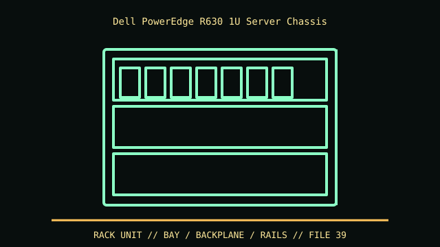

[ IDENTIFIED ENCLOSURE // POWEREDGE R630 (13TH GENERATION, 1U; NOT R640) ]
Dell PowerEdge R630 1U Server Chassis
42.8 × 434 × 692.8 mm (H × W × D), before rack rail/cable-arm projection. Chassis depth varies by front bezel and configuration.

VARIANT / ARCHIVAL CAVEAT: R630 differs from R640 in generation and drive/backplane support. Identify service tag, backplane assembly and riser layout.
Mechanical specifications and fit
| Catalog identity | PowerEdge R630 (13th generation, 1U; not R640) |
|---|---|
| Dimensions and clearances | 42.8 × 434 × 692.8 mm (H × W × D), before rack rail/cable-arm projection. Chassis depth varies by front bezel and configuration. |
| Drive bays / mounts | Front options include 8 or 10 hot-plug 2.5-inch bays, or 24 1.8-inch SSD positions on specialized configuration. Backplane/controller/drive type must match. |
| Board, system and compatibility | Dell proprietary board, riser and rail system; 1U card height and power are constrained. Use model-specific rails and verify slot riser before card install. |
| Revision / identification | R630 differs from R640 in generation and drive/backplane support. Identify service tag, backplane assembly and riser layout. |
Preservation and installation notes
R630 differs from R640 in generation and drive/backplane support. Identify service tag, backplane assembly and riser layout.
Dell proprietary board, riser and rail system; 1U card height and power are constrained. Use model-specific rails and verify slot riser before card install.
- Capture the complete model/SKU, serial/date label, board assembly and bay/backplane/riser identifiers before disassembly; keep matched screws, trays, carriers, feet and cables with the case.
- Check the cited manual's specific build option before transferring hardware. Published maximum GPU, drive, fan or radiator capacity may not be simultaneous when a removable cage or alternative riser occupies that volume.
- For rack and vintage systems, preserve the exact rails, shields, doors, brackets and model-specific safety instructions; do not infer compatibility from a familiar brand or physical connector shape.
Manufacturer manuals and archival sources
- Dell PowerEdge R630 Owner’s ManualPrimary manufacturer or model-specific technical/manual reference used for the identification and mechanical data above.
- Dell PowerEdge R630 manuals and technical documentsSecond product manual, manufacturer resource or established technical archive; choose the exact regional SKU and revision.
When exact dimensions depend on configuration, the text says so; verify the measured specimen before making a fit or restoration decision.